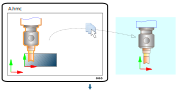
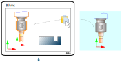
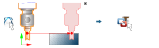
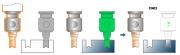

16.9. Reuse an electrode
Reuse an existing, fully constructed electrode “Electrode001” from a project A in a project B.
Requirements
The name of the EDM reference system must be identical in both projects, otherwise there will be no collision check for the virtual electrodes created from the copy.
If necessary, create a new additional EDM reference system with the name from project A on an existing EDM reference system origin.
The world workplanes in project A as well as in project B must be set to current for copying in both projects, otherwise the electrode with the machine head will be inserted at the wrong position.
The EDM reference system must be identical in project A as well as in project B to the world workplane in the Z direction, otherwise no selection of the EDM reference will be displayed for the virtual electrodes created from the copy.
A machine head must be present for collision checking.
Steps
In project A:
Select the entire group and the reference position (workplane “ElectrodeWorkplaneElectrode001”) of “Electrode001”.
If the reference position is not also copied, the machine head is not checked and no coordinate dimensioning is created during extraction.
Copy to the clipboard using → .

In project B:
Paste the group and reference position of “Electrode001” from the clipboard using → .
No collision check is carried out when pasting. This electrode is not checked!
The inserted “Electrode001” serves only as a “master” for new positions of virtual electrodes.
Virtual electrodes that have been generated are collision checked again if the EDM reference and the machine are present.
Use the Virtual electrode command for “Electrode001” to check whether virtual electrodes of the original project A still exist. If necessary, delete these virtual electrodes.
Check the description of “Electrode001” using the Modify EDM parameters command.
Copy “Electrode001” to the new positions in project B.
When copying, the machine head must be visible as a preview if it was created correctly with the master. Otherwise, the machine or the reference position will be missing.
In the Virtual electrode command, select the “Electrode001” master. Change the “Copied” property to the “Virtual” property for its electrode copies located in the new position. Select the appropriate EDM reference system.
If necessary, hide the “Electrode001” master.
Select the virtual electrodes for export without the “Electrode001” master in the Export reports command.
Important
The “Electrode001” pasted from the clipboard in project B is no longer collision checked, although it contains the status “collision-free”. Only the newly created virtual electrodes are checked for collisions.